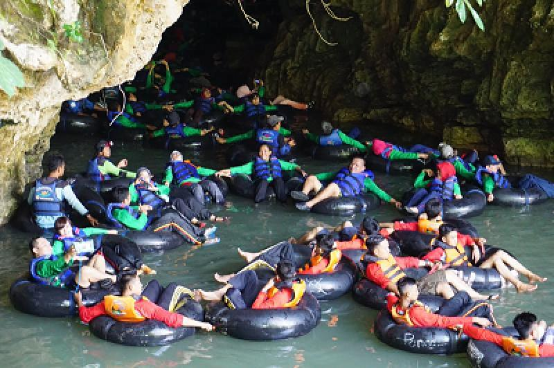

Goa Pindul, berasal dari kisah perjalanan Ki Juru Mertani dan Ki Ageng Pemanahan yang di utus oleh Panembahan Senopati Mataram, untuk membunuh bayi laki-laki buah cinta Putri Panembahan Senopati. Dalam perjalanannya, kedua Abdi itu sepakat untuk tidak membunuh sang bayi. Keduanya lalu pergi kearah timur yaitu ke (arah Gunungkidul), sementara itu sang bayi terus menangis, kedua utusan itupun memutuskan untuk memandikan sang bayi. Ki Juru Mertani naik ke salah satu bukit dan menginjak tanah di puncak bukit, dengan kesaktiannya tanah yang diinjak pun runtuh dan mengangalah sebuah lubang besar dengan aliran air dibawahnya, kemudian sang bayi dimandikan di dalam goa di lubang tadi. Saat dimandikan "pipi" sang bayi terbentur (jawa = kebendul) batu yang ada didalamnya. Karena peristiwa tersebut akhirnya goa itu dinamakan Goa Pindul (Pipi Kebendul).  Tetapi itu hanyalah sebuah cerita legenda saja, Goa Pindul memang ada sejak dulu, bahkan mungkin tidak ada orang yang pernah tahu secara pasti kapan goa ini terbentuk. Gua Pindul terbentuk secara alami mungkin berjuta-juta tahun yang lalu sebelum masehi. Tidak ada unsur buatan manusia sedikitpun hingga membentuk lorong gua.